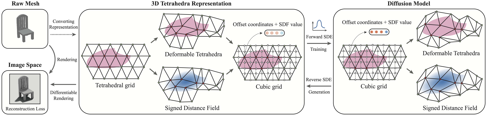

Method Overview
MeshDiffusion uses a 3D diffusion model to generate 3D meshes parametrized by deformable marching tetrahedra (DMTets).
Results
Once the avatar is built, we can animate it with detailed control over face and hands. We can alter the body shape, the clothing will adapt accordingly. We also transfer the clothing from other trained videos to the given subject.

Unconditional Generation
With standard DDPM training and sampling, MeshDiffusion can generate phtotrealistic and diverse set of 3D meshes, many of which are novel shapes not in the training set.
Single-view Conditional Generation
Provided with an incomplete DMTet fitted on a single 2.5D view, MeshDiffusion can generate the full 3D mesh by completing the occluded regions.
Interpolation
By using DDIM as the diffusion model sampler, the initial noise can be interpolated to create interpolated shapes.
Texture
The generated meshes by MeshDiffusion can be textured by using state-of-the-arts methods like TEXTure.
Acknowledgement
We thank Yuliang Xiu, Jinlong Yang, Tim Xiao, Haiwen Feng, Yandong Wen for constructive suggestions.
We also thank Ziyu Wang and Yishu Miao for the idea inspiration. We would like to thank Samsung Electronics Co., Ldt. for funding this research.
Disclosure. MJB has received research gift funds from Adobe, Intel, Nvidia, Meta/Facebook, and Amazon.
MJB has financial interests in Amazon, Datagen Technologies, and Meshcapade GmbH.
While MJB is a part-time employee of Meshcapade, his research was performed solely at, and funded solely by, the Max Planck Society.
DN is supported by NSERC Discovery Grant (RGPIN-5011360)
and LP is supported by NSERC Discovery Grant (RGPIN-04653).
BibTeX
@inproceedings{
liu2023scorebased,
title={Score-based Generative 3D Mesh Modeling},
author={Zhen Liu and Yao Feng and Michael J. Black and Derek Nowrouzezahrai and Liam Paull and Weiyang Liu},
booktitle={International Conference on Learning Representations},
year={2023},
url={https://openreview.net/forum?id=0cpM2ApF9p6}
}